| 日付 | 2016年11月3日（木） |
|---|---|
| 山域 | 南アルプス |
| メンバー | 家族（妻、長女・5歳、長男・3歳） |
| 山行形態 | 子連れ日帰り |
| アクセス | 車 |
| ルート (Map) | 夜叉神峠登山口駐車場 (9:38) - (10:45) 夜叉神峠 - (11:05) 高谷山 (11:37) - (11:55) 夜叉神峠 (12:42) - (13:19) 夜叉神峠登山口駐車場 |
久々の休日の晴予報。せっかくなので少し遠出してみることにする。
11月に入り南アルプスの山々も雪に覆われている頃なので、
雪山の展望を求めて、南アルプス前衛の高谷山に行ってみることにする。
夜叉神峠登山口駐車場に到着。標高1380m。
広い駐車場なので満車にはなっていないが、そこそこ車が停まっている。
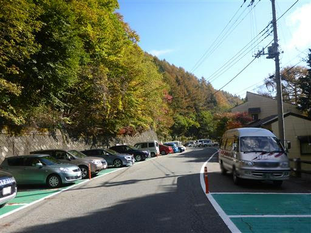
登山開始。息子は早速栗を見つけて拾っている。
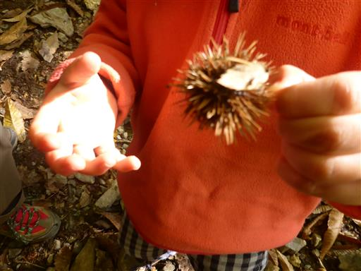
11月に入り黄葉がきれいに色付いている。
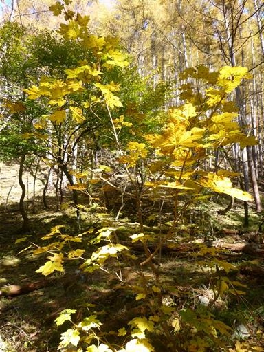
紅葉に包まれた登山道を登って行く。
息子は最初は歩いていたが、この辺りで早々にリタイア。
前回、前々回は頑張って歩いていただけに、がっかりだ。
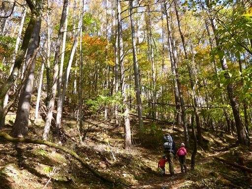
夜叉神峠に到着。南アルプスの代表的な峠の一つだ。
ここからは農取岳が大きく見えている。
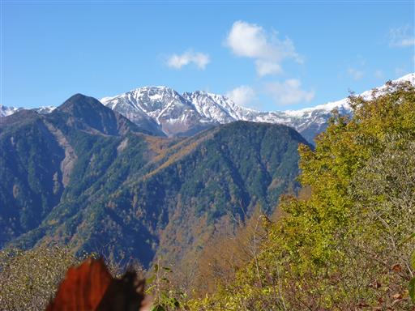
サルオガセが見られる。
ここはサルオガセがたくさん見られた櫛形山の近くなので、植生がよく似ている。
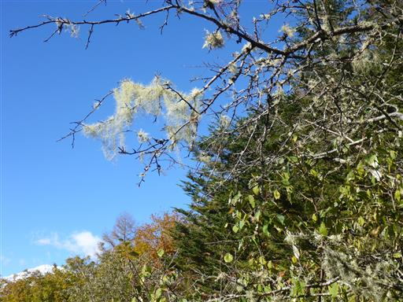
ここからは尾根歩き。
高谷山は夜叉神峠の南にあるため、ここから尾根を南下する。
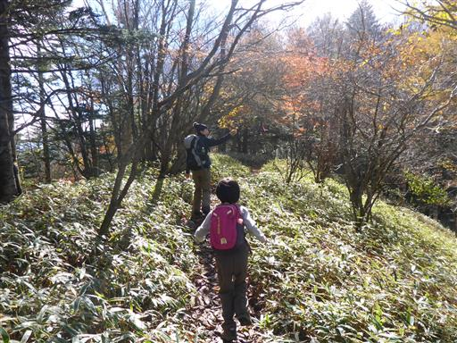
歩き始めてすぐに視界が開ける。こちらは間ノ岳と北岳。
山頂部はもう雪で白く染まっている。
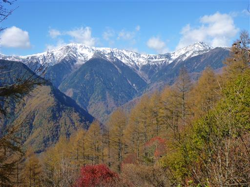
もう終わりかけだが、この辺りも紅葉が残っている。
太陽の光を浴びて、葉の色が美しい。

緩やかな尾根から最後に少しだけ登ると高谷山に到着する。標高1842m。
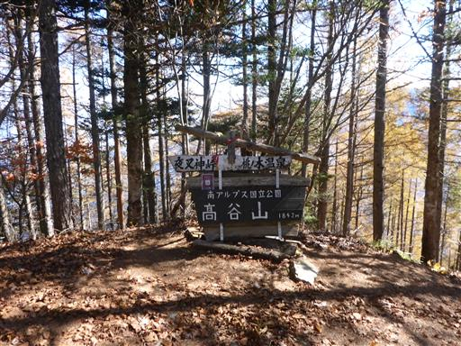
樹林に囲まれた山頂部で、ここからの展望はわずかだ。
山頂で昼食をとるが冷たい風が吹き抜けてとにかく寒い。
登山口には車がたくさん停まっていたのに、人影がほとんどない。
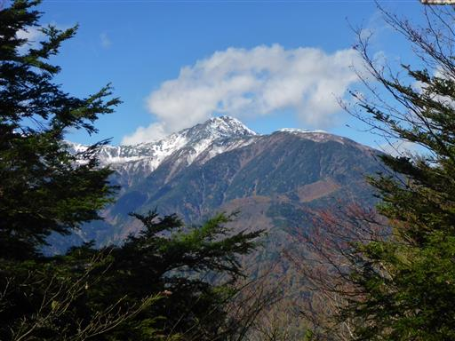
昼食を取ったら寒い山頂を早々に出発し、夜叉神峠に戻ってくる。
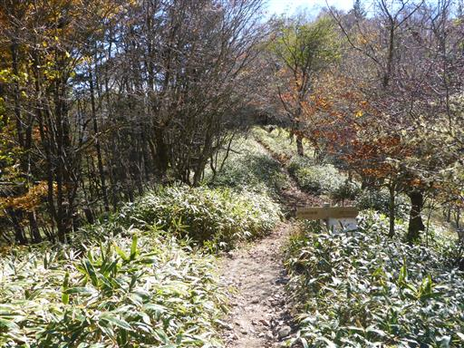
夜叉神峠から下山せずに、少し北上してみると大きな広場に出て来る。
夜叉神峠といえば、この場所のことを指すようだ。
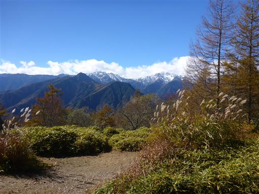
ここからは白峰三山の素晴らしい展望が広がる。
残念ながら雲がかかり始めている。午後の方が天気が良いという予報だったが…
こんな場所があるのなら登りの時に寄っておけばよかった。
多くの登山者は高谷山ではなく、ここが目的地のようだ。

農鳥岳からこちらに向かって大きな尾根が落ちている。
地図を見ると大唐松尾根と記載されているが登山道は無い。
一度登ってみたくなるような立派な尾根だ。
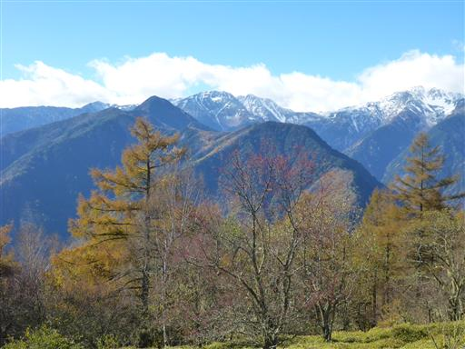
広場の片隅に夜叉神峠小屋が建っている。人影はなくひっそりとしている。
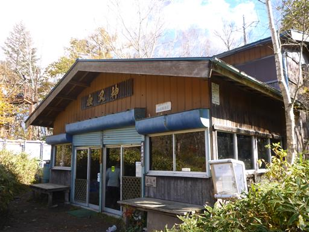
小屋の裏にはテント場が広がっている。
テントを張っている人はいないが、のんびり昼食をとっているグループがいる。
なかなか雰囲気の良いテント場だ。
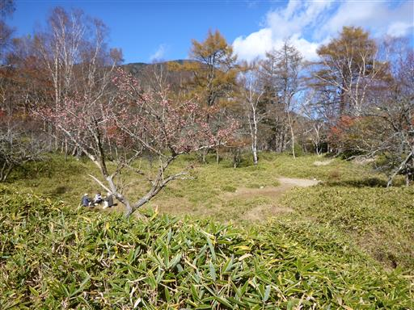
展望が良いので、のんびりおやつ休憩を取る。
子供達は夜叉神峠の立派な標識に登って遊んでいる。
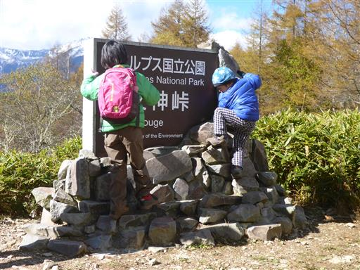
休憩を終えたら下山開始。五本松と標識が出ている立派な松の木が立っている。
名前の通り5本の幹がまっすぐ伸びている
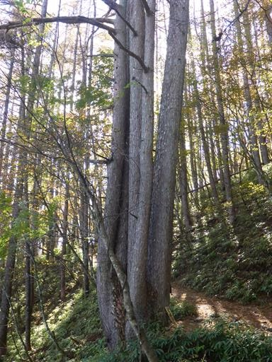
下山。夜叉神峠からの展望は素晴らしかったが、少し雲がかかっていたのが残念だった。
前回の高尾山であんなに頑張った息子が全く歩こうとせず、これもまた残念だった。
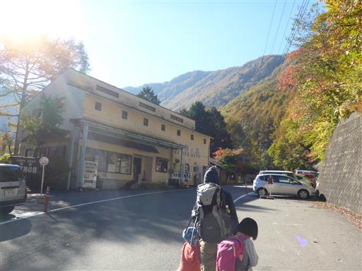